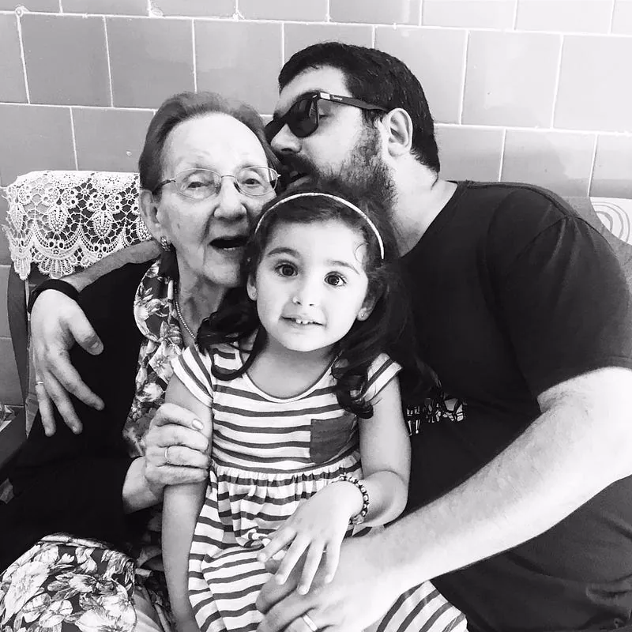

Otro lunes tachado del calendario.

Otro lunes tachado del calendario. Otro retorno por esa cuesta donde más noto tu ausencia, sin poder escucharte, sin tener tu presencia.
Pienso que puedo con ello; que sólo es ser fuerte y que basta con tirar de frente. Pero el corazón no engaña, y en cuanto me confío, me devuelve a la realidad. Una canción, una foto, un olor…
Los bonos de minutos se vuelven casi inservibles por ya no poder seguir con esas charlas banales. Charlas con la excusa de escucharte y saberte bien. Siempre preocupada aún cuando no hacía falta. Siempre preguntando «¿Y Emma? ¿Dónde la tienes? ¿En la piscina? ¡Ten cuidado! ¡No le pierdas ojo! ¿En inglés? ¿En música? Prubina, ¡Cuanto trabaja! Cuida de Isabel, que te quiere mucho y es muy buena, que suerte tuviste… ¿Te acuerdas cuando venia a casa a tomar el cafe y estaba yo allí? No discutáis ¿eh? Hay que llevarse siempre bien ¡que tenéis una neña!». Siempre contenta porque tenía mucho trabajo o tenía que bajar a la capital. Porque eso era bueno, eso era que valía y que me tenían en cuenta.
A veces me encuentro obnubilado recordando: una partida al burro, una merienda a deshora, un cine de luz de luna o una de Marisol.
Ya no podré ir sin avisarte para que no organizaras nada, para que no estuvieras preocupada. Ya no podré oírte saludarnos por la ventana del descansillo. Ya no podré abrazarte sobre el patio de luces, donde hasta el vértigo se me pasaba, sólo porque tu me agarrabas y me reñías, precisamente, por no avisarte para poder tener alguna entamada.
Ya no podré quejarme mientras le deslizas dinero a tu bisnieta, como si yo no me enterara. Siempre supimos que nosotros éramos ricos, porque el tiempo juntos era lo que más apreciábamos. Findes, veranos, nocheviejas… El caso era estar juntos, aunque fuera en casa ajena.
Recuerdo tu risa cuando era yo el que te reñía por pasar frío sin necesidad; por comer menos de lo necesario; por hacer dieta de café y pan. Porque daba igual que te dijera nada, yo sabía que tu ibas a hacer lo que te diera la gana, porque a cabezota como mucho te empataba.
Y nos llenabas de besos; y me cogías la mano recordando con cariño siempre las mismas historias. Historias de ovejas luceras y ladrillos de cama; de onzas derretidas y películas en la caravana; sin horarios ni reglas, donde todo valía. Porque ahí nadie más mandaba; ni mi madre, ni mi tía.
Bajar la escalera sabiendo que esperabas que abriera la puerta para volver a despedirte por el portero, imitando a la gran Lina con su gracias por venir.
Esos momentos me cargaban las pilas para una buena temporada. Que rabia no haber ido cada semana, que rabia no haberte tenido a una manzana.
Y aquí estoy, sin batería y echándote de menos (artrosis en el alma). Escribiendo estas palabras y escuchándote de fondo diciendo «prubín», porque siempre ponías a los demás antes que a ti. Porque se que lo sigues haciendo si depende de ti.
Pero te prometo que seguirás presente, que te recordaremos siempre.
Te quiero y no te Olvido; promesa de meñique.
Emma, mi abuela y yo